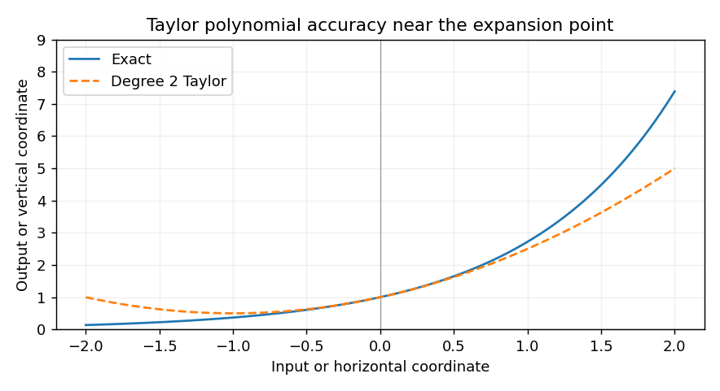
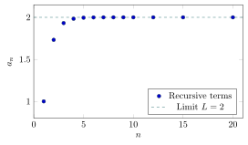
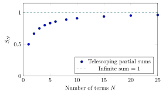
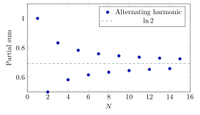
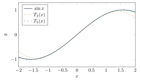
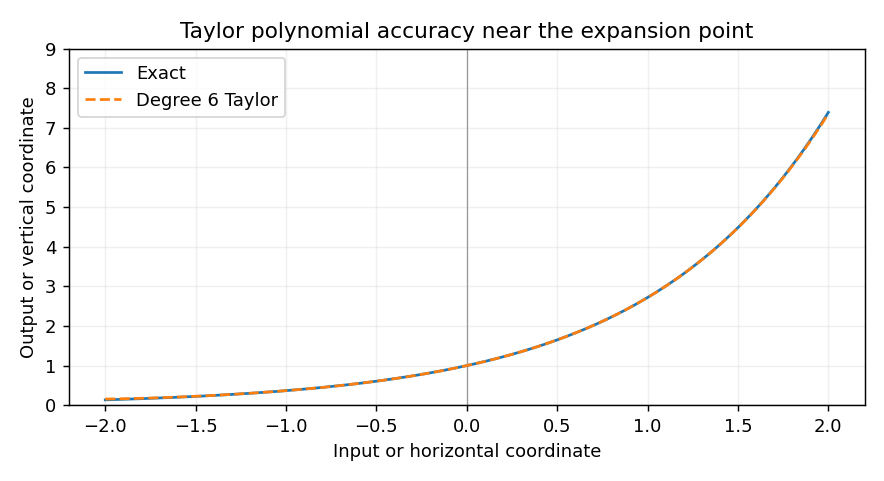

Infinite Sequences and Series
Guiding question. Can an infinite process produce a finite answer? The answer depends on the behavior of the terms and, for series, on the behavior of their partial sums. This chapter builds a careful distinction between numerical evidence and mathematical proof, then uses power and Taylor series to approximate functions with controlled error.
Learning outcomes. By the end of this chapter, students should be able to determine limits of sequences; distinguish a series from its terms; apply geometric, telescoping, integral, comparison, ratio, root, and alternating-series tests; classify absolute versus conditional convergence; find radii and intervals of convergence; construct Taylor polynomials and bound their remainders; and communicate the limitations of numerical approximation.
Prerequisites. Limits, continuity, differentiation, integration, the Fundamental Theorem of Calculus, and elementary algebraic inequalities.
Visual concept investigation
Convergence before computation
Partial sums can appear stable for many terms even when a series diverges or converges slowly. First identify the mathematical convergence criterion; only then interpret a numerical approximation. A Taylor polynomial is local: its accuracy depends on both degree and distance from the expansion point.

Guided investigation. Compare second- and sixth-degree Maclaurin approximations to \(e^x\) near \(x=0\) and at \(x=2\). What changes, and why?
Interactive investigation: Taylor polynomials
Sequences
A sequence is a function whose input is a positive integer. In applications, the index might count days, experimental trials, algorithmic iterations, or progressively refined approximations.
Definition — Sequence and convergence. A real sequence \(\{a_n\}_{n=1}^\infty\) converges to \(L\) if, for every \(\varepsilon>0\), there is an integer \(N\) such that \(n\ge N\) implies \(|a_n-L|<\varepsilon\). We write \(a_n\to L\) as \(n\to\infty\). If no finite \(L\) satisfies this condition, the sequence diverges.
Remark. A sequence is not a continuous curve: its domain contains integers only. Joining plotted points with line segments may help the eye, but the connecting segments are not part of the sequence.
Example — A direct convergence proof. Show that \(a_n=(3n+2)/(n+4)\) converges to \(3\).
Solution. Subtract the proposed limit: \[\left|\frac{3n+2}{n+4}-3\right|=\frac{10}{n+4}.\] Given \(\varepsilon>0\), choose an integer \(N>10/\varepsilon\). Then \(n\ge N\) implies \(10/(n+4)<\varepsilon\), proving the claim. Dividing numerator and denominator by \(n\) predicts the limit; the inequality supplies the proof.
Theorem — Limit laws for sequences. If \(a_n\to A\) and \(b_n\to B\), then \(a_n\pm b_n\to A\pm B\), \(a_nb_n\to AB\), and \(a_n/b_n\to A/B\) when \(B\ne0\) and the quotients are eventually defined.
Theorem — Squeeze theorem for sequences. If \(a_n\le b_n\le c_n\) eventually and \(a_n,c_n\to L\), then \(b_n\to L\).
Example — Oscillation with shrinking amplitude. Determine \(\lim_{n\to\infty}(-1)^n/n\).
Solution. Since \(-1/n\le(-1)^n/n\le1/n\) and both bounds tend to zero, the squeeze theorem gives zero. By contrast, \((-1)^n\) diverges because its even and odd subsequences approach different values.
Theorem — Monotone convergence theorem. Every increasing sequence that is bounded above converges. Every decreasing sequence that is bounded below converges.
Proof — Proof idea. For an increasing bounded sequence, let \(L\) be the least upper bound of its values. For any \(\varepsilon>0\), \(L-\varepsilon\) cannot be an upper bound, so some \(a_N>L-\varepsilon\). Monotonicity gives \(L-\varepsilon<a_n\le L\) for all \(n\ge N\). The decreasing case is analogous.
Example — A recurrence that settles. Let \(a_1=1\) and \(a_{n+1}=\sqrt{2+a_n}\). Show that \(a_n\to2\).
Solution. By induction, \(1\le a_n<2\): if \(a_n<2\), then \(a_{n+1}<2\). Also \(a_{n+1}\ge a_n\) on \([1,2]\), because \(\sqrt{2+x}\ge x\) there. Monotone convergence gives a limit \(L\in[1,2]\). Passing to the limit in the recurrence yields \(L=\sqrt{2+L}\), so \(L^2-L-2=0\). The admissible root is \(L=2\).

Pause and reason
Why does seeing the first 100 terms close to \(2\) not prove that a sequence converges? Can a sequence appear stable for many terms and later move away?
Infinite series
A sequence records individual values; a series asks whether adding its values indefinitely yields a finite total.
Definition — Series and partial sums. For a sequence \(a_n\), define \(S_N=\sum_{n=1}^{N}a_n\). The series \(\sum_{n=1}^\infty a_n\) converges to \(S\) when \(S_N\to S\); otherwise it diverges.
Theorem — Necessary condition for series convergence. If \(\sum_{n=1}^\infty a_n\) converges, then \(a_n\to0\).
Proof. Write \(a_n=S_n-S_{n-1}\). If both partial sums tend to \(S\), their difference tends to zero.
Remark — A frequent logical error. The converse is false. Terms approaching zero are necessary, not sufficient. The harmonic series \(\sum1/n\) diverges even though \(1/n\to0\).
Theorem — Geometric series. For real \(r\) with \(|r|<1\), \(\sum_{n=0}^\infty ar^n=a/(1-r)\). For \(a\ne0\) and \(|r|\ge1\), the series diverges.
Proof. The \(N\)th partial sum is \(a(1-r^{N+1})/(1-r)\) for \(r\ne1\). The power \(r^{N+1}\) tends to zero exactly when \(|r|<1\). For \(r=1\) the partial sums are \((N+1)a\).
Example — Repeated filtration. A filter removes 30% of the pollutant remaining after each pass. Starting with 80 units, what is the total amount removed over indefinitely many passes?
Solution. The first removal is \(24\), then \(24(0.7)\), then \(24(0.7)^2\), and so on. The geometric sum is \(24/(1-0.7)=80\) units. The model predicts that the remaining pollutant approaches zero, although no finite number of passes removes literally all of it.
Example — Telescoping series. Evaluate \(\sum_{n=1}^\infty\frac{1}{n(n+1)}\).
Solution. Since \(1/[n(n+1)]=1/n-1/(n+1)\), the partial sum is \(S_N=1-1/(N+1)\). Therefore the series converges to \(1\).

The integral test
Theorem — Integral test. Suppose \(f\) is continuous, positive, and decreasing on \([1,\infty)\) and \(a_n=f(n)\). Then \(\sum_{n=1}^\infty a_n\) and \(\int_1^\infty f(x)\,dx\) either both converge or both diverge.
Proof — Geometric reasoning. On each interval \([n,n+1]\), decreasingness gives \(f(n+1)\le\int_n^{n+1}f(x)\,dx\le f(n)\). Summing these inequalities relates the integral to the partial sums. Because all terms are nonnegative, boundedness of one sequence of accumulated totals is equivalent to boundedness of the other.
Theorem — \(p\)-series criterion. The series \(\sum_{n=1}^\infty1/n^p\) converges if \(p>1\) and diverges if \(p\le1\).
Proof. For \(p>0\), apply the integral test to \(x^{-p}\). The improper integral converges exactly for \(p>1\). For \(p\le0\), the terms do not tend to zero.
Example — A borderline logarithmic series. Test \(\sum_{n=2}^\infty 1/[n(\ln n)^2]\).
Solution. The integrand \(f(x)=1/[x(\ln x)^2]\) is positive and decreasing for \(x\ge2\). Substitute \(u=\ln x\): \[\int_2^\infty\frac{dx}{x(\ln x)^2}=\int_{\ln2}^\infty u^{-2}\,du=\frac1{\ln2}<\infty.\] The series converges. Replacing \((\ln n)^2\) with \(\ln n\) makes the corresponding integral diverge; the logarithmic exponent matters.
Theorem — Integral-test remainder bound. Under the integral-test hypotheses, if \(S=\sum_{n=1}^\infty a_n\) and \(S_N=\sum_{n=1}^N a_n\), then \[\int_{N+1}^\infty f(x)\,dx\le S-S_N\le\int_N^\infty f(x)\,dx.\]
Example — How many terms suffice?. Estimate the number of terms needed to approximate \(\sum_{n=1}^\infty1/n^3\) with error below \(0.001\).
Solution. The upper bound is \(\int_N^\infty x^{-3}\,dx=1/(2N^2)\). Requiring \(1/(2N^2)<0.001\) gives \(N>\sqrt{500}\approx22.36\). Thus \(N=23\) terms guarantee the desired accuracy.
Comparison tests
Theorem — Direct comparison test. Suppose \(0\le a_n\le b_n\) eventually. If \(\sum b_n\) converges, then \(\sum a_n\) converges. If \(\sum a_n\) diverges, then \(\sum b_n\) diverges.
Proof. The partial sums of nonnegative terms increase. An upper bound from the convergent larger series forces convergence of the smaller one. The second assertion is the contrapositive.
Theorem — Limit comparison test. For eventually positive terms \(a_n,b_n\), if \(\lim_{n\to\infty}a_n/b_n=c\) with \(0<c<\infty\), then \(\sum a_n\) and \(\sum b_n\) have the same convergence behavior.
Proof. For sufficiently large \(n\), \(c/2<a_n/b_n<2c\). Direct comparison in both directions completes the argument.
Example — Recognizing dominant powers. Determine whether \(\sum_{n=1}^\infty (4n+1)/(n^3+7)\) converges.
Solution. Compare with \(b_n=1/n^2\). Then \[\frac{(4n+1)/(n^3+7)}{1/n^2}=\frac{4n^3+n^2}{n^3+7}\longrightarrow4.\] Since \(\sum1/n^2\) converges, the original series converges.
Example — A misleading numerator. Determine whether \(\sum_{n=1}^\infty n/(n^2+5)\) converges.
Solution. The summand behaves like \(1/n\), not \(1/n^2\). Indeed \([n/(n^2+5)]/(1/n)=n^2/(n^2+5)\to1\). The harmonic series diverges, so the given series diverges.
Remark. Comparison tests require attention to sign. When terms change sign, first test absolute convergence by considering \(|a_n|\), or use a suitable alternating-series test.
The ratio and root tests
Theorem — Ratio test. For a series with nonzero terms, suppose \(L=\lim_{n\to\infty}|a_{n+1}/a_n|\) exists (possibly \(\infty\)). If \(L<1\), the series converges absolutely; if \(L>1\), it diverges; if \(L=1\), the test is inconclusive.
Theorem — Root test. Suppose \(L=\lim_{n\to\infty}\sqrt[n]{|a_n|}\) exists (possibly \(\infty\)). If \(L<1\), the series converges absolutely; if \(L>1\), it diverges; if \(L=1\), the test is inconclusive.
Example — Factorials suggest a ratio. Test \(\sum_{n=1}^\infty 3^n/n!\).
Solution. For \(a_n=3^n/n!\), \(|a_{n+1}/a_n|=3/(n+1)\to0\). The ratio test proves absolute convergence.
Example — Powers suggest a root. Test \(\sum_{n=1}^\infty[(2n+1)/(5n+2)]^n\).
Solution. The \(n\)th root is \((2n+1)/(5n+2)\to2/5<1\). The root test proves convergence.
Example — When a test says nothing. Apply the ratio test to \(\sum1/n\) and \(\sum1/n^2\).
Solution. In both cases \(|a_{n+1}/a_n|\to1\). One series diverges and the other converges, so \(L=1\) genuinely provides no conclusion. Use the \(p\)-series criterion instead.
Alternating series, absolute and conditional convergence
Theorem — Alternating-series test. If \(b_n\ge0\), \(b_{n+1}\le b_n\) eventually, and \(b_n\to0\), then \(\sum_{n=1}^\infty(-1)^{n-1}b_n\) converges.
Theorem — Alternating-series error bound. Under the alternating-series test hypotheses, the error after \(N\) terms satisfies \(|S-S_N|\le b_{N+1}\); the error has the sign of the first omitted term.
Definition — Absolute and conditional convergence. A series converges absolutely if \(\sum|a_n|\) converges. It converges conditionally if \(\sum a_n\) converges but \(\sum|a_n|\) diverges.
Theorem — Absolute convergence implies convergence. If \(\sum|a_n|\) converges, then \(\sum a_n\) converges.
Example — Conditional convergence. Classify \(\sum_{n=1}^\infty(-1)^{n-1}/n\).
Solution. The magnitudes \(1/n\) decrease to zero, so the alternating-series test proves convergence. But \(\sum1/n\) diverges. Thus the original series is conditionally convergent.
Example — An accuracy guarantee. How many terms of \(\sum_{n=1}^\infty(-1)^{n-1}/n^2\) ensure error at most \(10^{-4}\)?
Solution. We need \(1/(N+1)^2\le10^{-4}\), hence \(N+1\ge100\). Taking \(N=99\) terms is sufficient. This bound is rigorous; computing a few partial sums alone would not establish it.

Power series
Definition — Power series. A power series centered at \(c\) is an expression \(\sum_{n=0}^\infty a_n(x-c)^n\). Its radius of convergence \(R\) is the number such that the series converges absolutely for \(|x-c|<R\) and diverges for \(|x-c|>R\). Endpoints must be tested separately.
Theorem — Differentiation and integration within the radius. If \(\sum_{n=0}^\infty a_n(x-c)^n\) has radius \(R>0\), then for \(|x-c|<R\) it may be differentiated and integrated term by term: \[\frac{d}{dx}\sum_{n=0}^\infty a_n(x-c)^n=\sum_{n=1}^\infty n a_n(x-c)^{n-1},\] \[\int\sum_{n=0}^\infty a_n(x-c)^n\,dx=C+\sum_{n=0}^\infty\frac{a_n(x-c)^{n+1}}{n+1}.\] Both derived series have the same radius \(R\), though their endpoint behavior can differ.
Example — Radius versus interval. Find the interval of convergence of \(\sum_{n=1}^\infty (x-2)^n/[n3^n]\).
Solution. The ratio of consecutive magnitudes tends to \(|x-2|/3\). Thus \(R=3\), and the open interval is \((-1,5)\). At \(x=5\) the series becomes \(\sum1/n\), which diverges. At \(x=-1\) it becomes \(\sum(-1)^n/n\), which converges conditionally. The interval is \([-1,5)\).
Example — Constructing a logarithmic series. Starting from \(1/(1+t)=\sum_{n=0}^\infty(-1)^nt^n\) for \(|t|<1\), integrate from \(0\) to \(x\).
Solution. For \(|x|<1\), termwise integration yields \[\ln(1+x)=\sum_{n=1}^\infty\frac{(-1)^{n-1}x^n}{n}=x-\frac{x^2}{2}+\frac{x^3}{3}-\cdots.\] This derivation establishes the formula on the open interval; endpoint claims require additional reasoning.
Taylor and Maclaurin series
Definition — Taylor polynomial. If \(f\) has derivatives through order \(m\) near \(c\), its degree-\(m\) Taylor polynomial is \[T_m(x)=\sum_{k=0}^{m}\frac{f^{(k)}(c)}{k!}(x-c)^k.\] When \(c=0\), this is a Maclaurin polynomial.
Theorem — Taylor’s theorem with Lagrange remainder. If \(f\) has \(m+1\) continuous derivatives on an interval containing \(c\) and \(x\), then for some \(\xi\) between \(c\) and \(x\), \[f(x)=T_m(x)+R_m(x),\qquad R_m(x)=\frac{f^{(m+1)}(\xi)}{(m+1)!}(x-c)^{m+1}.\] If \(|f^{(m+1)}(t)|\le M\) on that interval, then \(|R_m(x)|\le M|x-c|^{m+1}/(m+1)!\).
Example — An exponential approximation with a bound. Approximate \(e^{0.4}\) using \(T_3(x)=1+x+x^2/2+x^3/6\).
Solution. At \(x=0.4\), \(T_3(0.4)=1+0.4+0.08+0.0106667=1.4906667\). Since \(f^{(4)}(t)=e^t\le e^{0.4}\) on \([0,0.4]\), the error is at most \(e^{0.4}(0.4)^4/24<0.00160\). The actual value \(e^{0.4}\approx1.4918247\) lies within this guaranteed interval.
Example — A trigonometric approximation. Use \(\sin x\approx x-x^3/6+x^5/120\) to approximate \(\sin(0.5)\).
Solution. The polynomial gives \(0.5-0.125/6+0.03125/120\approx0.47942708\). The degree-six Taylor polynomial has the same expression because the sixth coefficient is zero. Applying Taylor’s theorem with \(m=6\) and \(|f^{(7)}|\le1\) gives an error no greater than \(0.5^7/7!<1.56\times10^{-6}\).
Remark — Local approximation is not global accuracy. A Taylor polynomial is anchored at its center. Its error can grow as \(x\) moves away from the center. Increasing the degree helps only under appropriate regularity and convergence conditions.

Convergence of Taylor series
Theorem — Remainder criterion for Taylor-series equality. If \(R_m(x)=f(x)-T_m(x)\to0\) as \(m\to\infty\) for a fixed \(x\), then the Taylor series of \(f\) converges to \(f(x)\) at that point.
Example — Why the exponential series represents the function. Show that \(e^x=\sum_{n=0}^\infty x^n/n!\) for every real \(x\).
Solution. Fix \(x\). On the interval joining \(0\) to \(x\), \(e^t\) is bounded above by \(M=e^{\max(0,x)}\). Taylor’s theorem gives \(|R_m(x)|\le M|x|^{m+1}/(m+1)!\to0\) because factorial growth dominates any fixed power. Thus the series converges to \(e^x\).
Example — Smooth does not automatically mean equal to Taylor series. Consider \(f(x)=e^{-1/x^2}\) for \(x\ne0\) and \(f(0)=0\).
Solution. Every derivative of \(f\) at \(0\) is zero, so its Maclaurin series is identically zero. Yet \(f(x)>0\) whenever \(x\ne0\). The series converges everywhere, but it represents \(f\) only at the center. This is a reminder to distinguish existence of derivatives from convergence of the remainder to zero.
Remark. A finite polynomial approximation is useful even when the infinite Taylor series does not represent the function globally. Always state the interval and the kind of error guarantee being claimed.
The binomial series and applications of Taylor series
Theorem — Generalized binomial series. For any real \(\alpha\) and \(|x|<1\), \[(1+x)^\alpha=\sum_{n=0}^\infty\binom{\alpha}{n}x^n,\quad \binom{\alpha}{0}=1,\quad\binom{\alpha}{n}=\frac{\alpha(\alpha-1)\cdots(\alpha-n+1)}{n!}.\] For nonnegative integer \(\alpha\), the expansion terminates. Endpoint behavior depends on \(\alpha\).
Example — Square-root sensitivity. Approximate \(\sqrt{1.08}\) using three nonconstant binomial terms.
Solution. For \(\alpha=1/2\), \[(1+x)^{1/2}=1+\frac{x}{2}-\frac{x^2}{8}+\frac{x^3}{16}+\cdots.\] At \(x=0.08\), the cubic approximation is \(1+0.04-0.0008+0.000032=1.039232\). The exact square root is approximately \(1.03923048\), so the cubic approximation is accurate to about two millionths.
Example — Integrating a function without an elementary antiderivative. Approximate \(\int_0^{0.5}e^{-x^2}\,dx\).
Solution. Insert \(-x^2\) into the exponential series and integrate termwise on a bounded interval: \[\int_0^{0.5}e^{-x^2}\,dx=\sum_{n=0}^\infty\frac{(-1)^n(0.5)^{2n+1}}{n!(2n+1)}.\] The first four terms give \(0.5-0.5^3/3+0.5^5/10-0.5^7/42\approx0.4612810\). The alternating terms decrease in magnitude; the next term bounds the error.
Strategy guide: choosing a convergence test
| What you notice | First method to consider |
|---|---|
| \(a_n\not\to0\) | Divergence test; stop immediately |
| \(ar^n\) or telescoping cancellation | Exact partial sums |
| Positive, decreasing \(f(n)\) | Integral test and remainder bounds |
| Rational powers of \(n\) | Direct or limit comparison with a \(p\)-series |
| Factorials or exponential powers | Ratio test |
| A whole expression raised to \(n\) | Root test |
| Alternating signs and shrinking magnitudes | Alternating-series test; then check absolute convergence |
| Powers of \((x-c)\) | Ratio/root test, then test both endpoints |
Remark. This is a decision aid, not a mechanical algorithm. A test may be inconclusive; selecting a different test is part of mathematical reasoning.
Computational investigations: R laboratories
The laboratories deliberately follow the mathematical development. In each investigation, students should first predict the result analytically, then use computation to test the prediction. A numerical graph is evidence about finitely many terms, not a proof of convergence. All R examples use base R.
R Laboratory 1: Sequences and partial sums
n <- 1:100
terms <- (-1)^(n - 1) / n
partial <- cumsum(terms)
plot(n, partial, pch=16, cex=0.45,
xlab="Number of terms", ylab="Partial sum")
abline(h=log(2), lty=2)
cat("100-term estimate:", tail(partial, 1), "\n")
cat("Exact limit:", log(2), "\n")Investigate. Do even partial sums lie on the same side of \(\ln2\) as odd partial sums? Explain using the alternating-series theorem.
R Laboratory 2: Geometric and harmonic growth
n <- 1:300
geo <- cumsum(0.7^(n-1))
harmonic <- cumsum(1/n)
plot(n, harmonic, type="l", lwd=2,
xlab="Number of terms", ylab="Partial sum")
lines(n, geo, lty=2, lwd=2)
legend("topleft", c("Harmonic", "Geometric"),
lty=c(1,2), bty="n")
cat("Geometric limit:", 1/(1-0.7), "\n")Investigate. The harmonic curve grows slowly. Why is slow growth not the same as convergence?
R Laboratory 3: Integral-test remainder bounds
N <- c(5, 10, 20, 50, 100)
upper <- 1/(2*N^2)
lower <- 1/(2*(N+1)^2)
print(data.frame(N, lower, upper))
cat("Smallest N for upper error < 0.001:",
which(1/(2*(1:100)^2) < 0.001)[1], "\n")Investigate. State which assumptions of the integral test are needed to justify these bounds.
R Laboratory 4: Taylor approximation and error
x <- seq(-2, 2, length.out=401)
t3 <- x - x^3/factorial(3)
t5 <- t3 + x^5/factorial(5)
plot(x, sin(x), type="l", lwd=2,
xlab="x", ylab="Function value")
lines(x, t3, lty=2)
lines(x, t5, lty=3)
legend("topleft", c("sin(x)", "Degree 3", "Degree 5"),
lty=1:3, bty="n")
cat("Degree-5 error at 0.5:",
abs(sin(0.5) - (0.5-0.5^3/6+0.5^5/120)), "\n")Investigate. Explain why the fifth-degree approximation is generally more accurate near zero.
R Laboratory 5: Power-series interval
partial_power <- function(x, N) {
n <- 1:N
sum((x-2)^n/(n*3^n))
}
for (x in c(-1, 0, 2, 4, 5)) {
cat("x =", x, " S100 =", partial_power(x, 100), "\n")
}Investigate. Explain analytically why the endpoint \(x=-1\) behaves differently from \(x=5\).
R Laboratory 6: Error-aware series computation
# Integral of exp(-x^2) from 0 to 0.5
terms <- function(n) (-1)^n*0.5^(2*n+1)/
(factorial(n)*(2*n+1))
n <- 0:8
approx <- cumsum(terms(n))
exact <- integrate(function(x) exp(-x^2), 0, 0.5)$value
print(data.frame(n, approximation=approx,
abs_error=abs(approx-exact)))Investigate. Compare the observed error with the magnitude of the first omitted term. Explain when that bound is valid.
Computational investigations: Python laboratories
The Python laboratories reproduce the mathematical investigations
using NumPy and Matplotlib. They are placed after all R laboratories,
not side by side. Python 3 with numpy,
matplotlib, and the standard library is sufficient; the
last laboratory uses a high-accuracy numerical comparison implemented
with a fine trapezoidal grid.
Python Laboratory 1: Sequences and partial sums
import numpy as np
import matplotlib.pyplot as plt
n = np.arange(1, 101)
terms = (-1.0)**(n - 1) / n
partial = np.cumsum(terms)
plt.scatter(n, partial, s=10)
plt.axhline(np.log(2), linestyle="--")
plt.xlabel("Number of terms")
plt.ylabel("Partial sum")
plt.show()
print("100-term estimate:", partial[-1])
print("Exact limit:", np.log(2))Python Laboratory 2: Geometric and harmonic growth
import numpy as np
import matplotlib.pyplot as plt
n = np.arange(1, 301)
geo = np.cumsum(0.7**(n - 1))
harmonic = np.cumsum(1/n)
plt.plot(n, harmonic, label="Harmonic")
plt.plot(n, geo, "--", label="Geometric")
plt.xlabel("Number of terms")
plt.ylabel("Partial sum")
plt.legend()
plt.show()
print("Geometric limit:", 1/(1-0.7))Python Laboratory 3: Integral-test remainder bounds
import numpy as np
N = np.array([5, 10, 20, 50, 100])
for n in N:
print(n, 1/(2*(n+1)**2), 1/(2*n**2))
print("Smallest N:", next(n for n in range(1, 101)
if 1/(2*n*n) < 0.001))Python Laboratory 4: Taylor approximation and error
import numpy as np
import matplotlib.pyplot as plt
x = np.linspace(-2, 2, 401)
t3 = x - x**3/6
t5 = t3 + x**5/120
plt.plot(x, np.sin(x), label="sin(x)")
plt.plot(x, t3, "--", label="Degree 3")
plt.plot(x, t5, ":", label="Degree 5")
plt.legend()
plt.show()
print(abs(np.sin(0.5) - (0.5-0.5**3/6+0.5**5/120)))Python Laboratory 5: Power-series interval
import numpy as np
def partial_power(x, N):
n = np.arange(1, N+1)
return np.sum(((x-2)/3)**n/n)
for x in [-1, 0, 2, 4, 5]:
print("x =", x, "S100 =", partial_power(x, 100))Python Laboratory 6: Error-aware series computation
import math
import numpy as np
n = np.arange(0, 9)
terms = np.array([(-1)**int(k)*0.5**(2*int(k)+1)/
(math.factorial(int(k))*(2*int(k)+1))
for k in n])
approx = np.cumsum(terms)
x = np.linspace(0, 0.5, 100001)
reference = np.trapezoid(np.exp(-x*x), x)
for k, estimate in zip(n, approx):
print(k, estimate, abs(estimate-reference))Computational caution. Floating-point summation, cancellation, overflow, and underflow can distort results for very large \(N\). A program that prints a stable decimal is not automatically a convergence proof.
Chapter exercises
Instructions. For every convergence question, name the theorem or test used and verify its hypotheses. Do not report a calculator output as the sole justification. Exercises marked [C] call for a short R or Python investigation after an analytical argument.
A. Sequences and partial sums
Find \(\lim_{n\to\infty}(5n-1)/(2n+7)\) and justify your result.
Determine whether \(a_n=(-1)^n+1/n\) converges.
Prove from the \(\varepsilon\)–\(N\) definition that \(2/n\to0\).
Use the squeeze theorem to evaluate \(\lim_{n\to\infty}\sin n/n\).
Show that \(a_n=1-1/n\) is increasing and bounded; find its limit.
For \(a_1=2\), \(a_{n+1}=(a_n+6/a_n)/2\), predict the limit and justify convergence using a suitable argument.
Find a closed formula for \(S_N=\sum_{n=1}^N1/[n(n+2)]\) and compute the infinite sum.
Determine the sum of \(\sum_{n=0}^\infty 7(0.4)^n\).
Explain why \(\sum_{n=1}^\infty n/(n+2)\) diverges without computing partial sums.
[C] Plot the first 100 partial sums of \(\sum_{n=1}^\infty(-1)^{n-1}/n\). Describe the pattern and distinguish evidence from proof.
B. Positive-term series and comparison
Test \(\sum_{n=1}^\infty1/n^{5/4}\).
Test \(\sum_{n=2}^\infty1/(n\ln n)\) using an integral.
Test \(\sum_{n=2}^\infty1/[n(\ln n)^3]\).
Determine convergence of \(\sum_{n=1}^\infty(3n^2+1)/(n^4+2)\).
Determine convergence of \(\sum_{n=1}^\infty(2n^2+7)/(n^3+1)\).
Prove that \(\sum_{n=1}^\infty1/(n^2+9)\) converges by direct comparison.
Test \(\sum_{n=1}^\infty\sqrt{n}/(n^2+1)\) using limit comparison.
For \(\sum1/n^4\), derive an upper bound for the error after \(N\) terms.
Find a sufficient \(N\) to approximate \(\sum1/n^4\) with error less than \(10^{-5}\).
[C] Compare partial sums of \(\sum1/n\) and \(\sum1/n^{1.1}\) through \(N=10^4\). Explain why their apparent rates of growth can be misleading.
C. Ratio, root, and alternating tests
Test \(\sum_{n=1}^\infty4^n/n!\).
Test \(\sum_{n=1}^\infty n!/5^n\).
Test \(\sum_{n=1}^\infty[(3n+2)/(7n+1)]^n\).
Explain why the ratio test is inconclusive for both \(\sum1/n\) and \(\sum1/n^3\).
Classify \(\sum_{n=1}^\infty(-1)^{n-1}/\sqrt n\) as absolutely, conditionally, or nonconvergent.
Classify \(\sum_{n=1}^\infty(-1)^n/n^2\).
Determine a sufficient number of terms to approximate \(\sum(-1)^{n-1}/n^3\) within \(10^{-5}\).
Give an example of a series whose terms tend to zero but whose sum diverges, and explain why.
[C] Compare the observed alternating-series error with the first omitted term for \(N=5,10,20,40\).
Explain why absolute convergence guarantees convergence but not conversely.
D. Power series and Taylor approximation
Find the radius and interval of convergence of \(\sum_{n=1}^\infty x^n/(n2^n)\).
Find the radius and interval of convergence of \(\sum_{n=1}^\infty n(x+1)^n/4^n\).
Find the radius of convergence of \(\sum_{n=0}^\infty n!x^n\).
Differentiate \(\sum_{n=0}^\infty x^n\) termwise for \(|x|<1\) and identify the resulting function.
Obtain a power series for \(\arctan x\) by integrating a geometric series.
Find the degree-four Maclaurin polynomial for \(\cos x\).
Find the degree-three Taylor polynomial for \(\ln x\) centered at \(x=1\).
Approximate \(e^{0.2}\) using its degree-three Maclaurin polynomial and give a rigorous error bound.
Approximate \(\sin(0.3)\) using a degree-five Maclaurin polynomial and bound the error.
Explain why convergence of a Taylor series is not sufficient to prove that it equals its generating function.
Expand \((1+x)^{-1/2}\) through the cubic term.
Use a binomial approximation to estimate \(\sqrt{1.04}\) and assess its accuracy.
Derive a series representation for \(\int_0^a e^{-x^2}\,dx\) for \(0<a<1\).
[C] Plot \(e^x\) and its degree-two, degree-four, and degree-eight Maclaurin polynomials on \([-2,2]\).
[C] Investigate the partial sums of \(\sum x^n/n\) for \(x=-1,0.5,1\). State what the convergence theorems guarantee.
E. Conceptual synthesis
Distinguish the statements \(a_n\to0\) and \(\sum a_n\) converges.
Describe the difference between radius of convergence and interval of convergence.
Explain why a remainder bound is more informative than displaying ten decimal places.
Construct two series with the same first five terms but different convergence behavior.
Write a short critique of the claim: “My program produced stable partial sums, so the infinite series must converge.”
Concluding applied project: A reliable approximation engine
Context. A portable environmental sensor estimates a cumulative response whose calibration function contains the integral \[F(t)=\int_0^t e^{-u^2}\,du,\qquad 0\le t\le1.\] This integral has no elementary antiderivative. A computational model must approximate it while providing a defensible error guarantee. The goal is to design, validate, and communicate a practical approximation method.
Part I: Derive the mathematics (25 points)
Starting from \(e^x=\sum_{n=0}^\infty x^n/n!\), derive \[F(t)=\sum_{n=0}^\infty\frac{(-1)^nt^{2n+1}}{n!(2n+1)}.\] State why termwise integration is justified on the interval \([0,1]\).
Write the first four nonzero terms of the approximation \(F_3(t)\).
Prove that for \(0\le t\le1\), the terms alternate with decreasing magnitude. Derive an error bound using the first omitted term.
Part II: Implement and verify (30 points)
Write an R function that accepts \(t\) and a requested tolerance and adds terms until the next-term bound falls below the tolerance.
Independently implement the same algorithm in Python. Document indexing and stopping conditions clearly.
For \(t=0.25,0.50,0.75,1.00\), compare both implementations with a high-accuracy numerical integration benchmark. Report the estimate, the benchmark, the actual absolute error, and the theoretical error bound.
Part III: Analyze efficiency and reliability (25 points)
Compare the number of terms required to reach tolerances \(10^{-3}\), \(10^{-6}\), and \(10^{-9}\).
Graph \(F(t)\) and the polynomial approximations with 2, 4, and 6 nonzero terms. Identify where the differences are largest.
Explain why agreement between R and Python is useful but does not by itself establish mathematical correctness.
Part IV: Communication (20 points)
- Prepare a two-page technical memo explaining the derivation, convergence guarantee, numerical checks, and limitations of the sensor model. Include at least one clearly labeled figure and one concise results table.
Assessment rubric. Derivation and justification: 25 points; reproducible R and Python implementations: 30 points; efficiency and validation: 25 points; interpretation and communication: 20 points. Total: 100 points.
Chapter synthesis
The defining object of an infinite series is its sequence of partial sums. Convergence tests supply logically different kinds of information: some establish existence of a sum, some determine where a function representation is valid, and others bound approximation error. Taylor methods are especially powerful when the resulting remainder can be controlled. R and Python make the numerical behavior visible, but a mathematical argument explains why the computation should be trusted.
Looking ahead. Chapter 10 turns from functions represented by power series to curves represented parametrically or in polar coordinates, bringing together graphical modeling, derivatives, integrals, and computational visualization.
Graphical synthesis and reflective practice

Reflection. State what the graph demonstrates, what it does not establish, and how you would verify the corresponding claim analytically. Identify the relevant units or mathematical assumptions before using a computer-generated result.